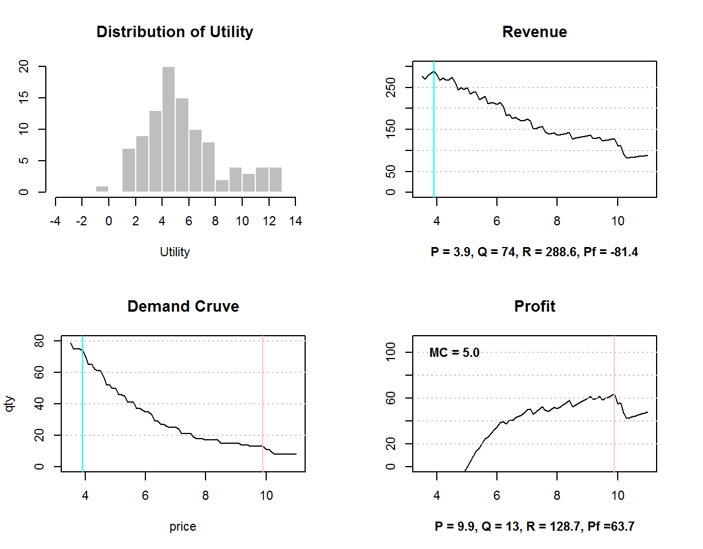

2 產品設計與定價策略
假設你要推出一個全新的產品到一個新市場：
- 你要推出什麼規格的產品？
- 你要訂什麼價格？
- 給定「策略目標」，如何找到「最佳」的產品和價格策略？
- 在多重策略目標之下，一個「合理」的策略需要有什麼條件？
2.1 成本函數
設定每一個選項的成本 costs，然後定義一個成本函數 PC(pd)
costs = list(bitter = c(0.3, 0.2, 0.1),
variety = c(0.9, 0.5, 0.2),
kind = c(0.5, 0.3, 0.6),
arom = c(0.7, 0.4) )
PC = function(pd) { 2.5 + sum(sapply(1:length(att), function(i) costs[[i]][pd[i]] )) }
PC(c(1,1,3,1))## [1] 52.2 價量關係、營收、獲利
給定 產品 與 價格，我們可以算出 銷售量 、 營收 、 獲利 和 滲透率 ：
Given price \(p\), marginal cost \(c\), and respondent \(i\)’s utility (\(u_i\)):
\[
\left\{\begin{matrix}
q(p) = \sum_i I(u_i > p) & quantity\\
r(p) = q(p) * p & revenue\\
\pi(p) = q(p) * (p - c) & profit
\end{matrix}\right.
\]
給定產品規格，我們可以在價格區間之中描出：
- 需求曲線: \(q(p)\)
- 營收曲線: \(r(p)\)
- 獲利曲線: \(\pi(p)\)
pqr = function(p, m, u) {
q = sapply(p, function(x) sum(u > x) )
pf = q * (p-m); ip = which.max(pf)
r = q * p; ir = which.max(r)
par(cex=0.7,mar=c(5,4,4,3))
plot(p,q,type='l',main="Demand Cruve",xlab="price",ylab="qty",ylim=c(0,80))
abline(v=p[ip],col='pink'); abline(v=p[ir],col='cyan')
abline(h=seq(20,80,20),lty=3,col='grey')
plot(p, r, type='l',main="Revenue",ylab="",ylim=c(0,300),font.lab=2,
xlab=sprintf("P = %.1f, Q = %d, R = %.1f, Pf = %.1f",
p[ir], q[ir], r[ir], pf[ir] ))
abline(v=p[ir],col='cyan');
abline(h=seq(50,250,50),lty=3,col='grey')
plot(p, pf, type='l',main="Profit",ylab="",ylim=c(0,110),font.lab=2,
xlab=sprintf("P = %.1f, Q = %d, R = %.1f, Pf =%.1f",
p[ip], q[ip], r[ip], pf[ip] ) )
abline(v=p[ip],col='pink');
abline(h=seq(20,100,20),lty=3,col='grey')
text(3.5,100,sprintf("MC = %.1f",m),pos=4,font=2)
}為了方便比較，我們把 產品效用的分佈 ，和需求曲線、營收曲線、獲利曲線畫在一起
pd1 = c(1,1,3,1)
ut1 = UT(pd1)
par(mfcol=c(2,2),cex=0.7,mar=c(5,3,4,3))
hist(ut1,-5:13,main="Distribution of Utility",xaxt='n',col='gray',
border='white',xlab="Utility",ylab="",xlim=c(-4,14))
axis(1,at=seq(-4,14,2))
pqr(seq(3.5,11,0.1),PC(pd1),ut1)
SIM-1: 產品設計與定價策略
我們可以把這段程式改成一個市場模擬器 sim1.R :
source("sim1.R")
根據 APW (1.5)，什麼樣的產品規格和價格，會得到最佳的獲利呢?
試著使用模擬程式，找尋最佳的獲利和營收。
你找出來的結果，與用APW找出來的結果是相同的嗎？
這個練習的策略意涵是什麼？
2.3 自動模擬
我們還可以寫一段程式，把所有可能的產品(3x3x3x2=54)掃過一遍，把每一個可能產品的最佳營收和獲利都找出來，放在 X 這個矩陣裡面。
pds = as.matrix(expand.grid(1:3,1:3,1:3,1:2))
X = t(apply(pds, 1, function (v) {
c = PC(v)
u = UT(v)
X = t( sapply(seq(3,10,0.1), function (p) {
q = sum(u > p)
c(p, q, q * p, q * (p - c)) }) )
c(mean(u), c, X[which.max(X[,3]),], X[which.max(X[,4]),])
}))
X = data.frame(cbind(pds,X))
colnames(X) = c('v1','v2','v3','v4', # product spec
'ut', # average utility of the product
'cost', # cost
'p1','q1','r1','pf1', # price, quantity, revenue, profit at max. revenue
'p2','q2','r2','pf2' # price, quantity, revenue, profit at max. porfit
)head(X[order(- X$r1),],10) # order X by 最佳營收## v1 v2 v3 v4 ut cost p1 q1 r1 pf1 p2 q2 r2 pf2
## 21 3 1 3 1 5.235 4.8 5.0 62 310.0 12.4 7.0 27 189.0 59.4
## 19 1 1 3 1 5.572 5.0 3.9 74 288.6 -81.4 9.9 13 128.7 63.7
## 3 3 1 1 1 4.619 4.7 4.5 64 288.0 -12.8 5.8 41 237.8 45.1
## 1 1 1 1 1 4.956 4.9 4.2 66 277.2 -46.2 7.2 23 165.6 52.9
## 2 2 1 1 1 4.573 4.8 3.7 72 266.4 -79.2 5.7 32 182.4 28.8
## 20 2 1 3 1 5.189 4.9 4.3 61 262.3 -36.6 8.1 16 129.6 51.2
## 23 2 2 3 1 4.609 4.5 5.6 46 257.6 50.6 6.6 33 217.8 69.3
## 22 1 2 3 1 4.992 4.6 4.7 54 253.8 5.4 8.2 24 196.8 86.4
## 24 3 2 3 1 4.655 4.4 4.7 54 253.8 16.2 8.5 19 161.5 77.9
## 46 1 1 3 2 4.751 4.7 4.3 59 253.7 -23.6 7.5 20 150.0 56.0head(X[order(- X$pf2),],10) # order X by 最佳獲利## v1 v2 v3 v4 ut cost p1 q1 r1 pf1 p2 q2 r2 pf2
## 22 1 2 3 1 4.992 4.6 4.7 54 253.8 5.4 8.2 24 196.8 86.4
## 49 1 2 3 2 4.171 4.3 5.1 47 239.7 37.6 8.9 17 151.3 78.2
## 24 3 2 3 1 4.655 4.4 4.7 54 253.8 16.2 8.5 19 161.5 77.9
## 51 3 2 3 2 3.833 4.1 5.2 44 228.8 48.4 7.0 25 175.0 72.5
## 27 3 3 3 1 3.970 4.1 6.0 33 198.0 62.7 8.6 16 137.6 72.0
## 23 2 2 3 1 4.609 4.5 5.6 46 257.6 50.6 6.6 33 217.8 69.3
## 50 2 2 3 2 3.787 4.2 5.4 42 226.8 50.4 7.2 23 165.6 69.0
## 54 3 3 3 2 3.149 3.8 5.6 28 156.8 50.4 6.7 23 154.1 66.7
## 19 1 1 3 1 5.572 5.0 3.9 74 288.6 -81.4 9.9 13 128.7 63.7
## 4 1 2 1 1 4.376 4.5 5.3 40 212.0 32.0 7.0 25 175.0 62.52.4 策略目標、策略優化
通常公司的目標都不只是將營收、獲利最大化這麼簡單。利用自動模擬的結果 X，請試著：
在不虧本的前提之下，產生最大營收
subset(X[order(- X$r1),], pf1>0)[1:5,] ## v1 v2 v3 v4 ut cost p1 q1 r1 pf1 p2 q2 r2 pf2
## 21 3 1 3 1 5.235 4.8 5.0 62 310.0 12.4 7.0 27 189.0 59.4
## 23 2 2 3 1 4.609 4.5 5.6 46 257.6 50.6 6.6 33 217.8 69.3
## 22 1 2 3 1 4.992 4.6 4.7 54 253.8 5.4 8.2 24 196.8 86.4
## 24 3 2 3 1 4.655 4.4 4.7 54 253.8 16.2 8.5 19 161.5 77.9
## 49 1 2 3 2 4.171 4.3 5.1 47 239.7 37.6 8.9 17 151.3 78.2在滲透率大於30%的前提之下，將獲利最大化
subset(X[order(- X$pf2),], q2>30)[1:5,] ## v1 v2 v3 v4 ut cost p1 q1 r1 pf1 p2 q2 r2 pf2
## 23 2 2 3 1 4.609 4.5 5.6 46 257.6 50.6 6.6 33 217.8 69.3
## 53 2 3 3 2 3.103 3.9 5.5 31 170.5 49.6 5.5 31 170.5 49.6
## 3 3 1 1 1 4.619 4.7 4.5 64 288.0 -12.8 5.8 41 237.8 45.1
## 5 2 2 1 1 3.993 4.4 4.6 50 230.0 10.0 5.6 32 179.2 38.4
## 2 2 1 1 1 4.573 4.8 3.7 72 266.4 -79.2 5.7 32 182.4 28.8現實的狀況是，你常常需要在目標不明確的狀況下做策略規劃：
請試著自己設定營運目標，找到實現這一個目標的最佳策略，
然後，跟大家分享你的目標和策略，和它們背後的邏輯。
最後再想看看，老闆為什麼常常不告訴你明確的目標，就叫你做策略規劃呢？
2.5 目標的範圍、合理的策略
如果我們將 所有產品 的最佳營收和獲利一起畫在同一個平面上：
df = data.frame(revenue=c(X$r1,X$r2),profit=c(X$pf1,X$pf2),
p=c(X$p1,X$p2),q=c(X$q1,X$q2),
opt=c(rep('opt.revenue',nrow(X)),rep('opt.profit',nrow(X))),
lab=rep(apply(X[,1:4],1,paste0,collapse=''),2) )
hchart(df, "scatter", x=revenue, y=profit, group=opt, lab, p, q) %>%
hc_plotOptions(series=list(allowPointSelect=T)) %>%
hc_chart(zoomType = "xy") %>% hc_add_theme(hc_theme_flat()) %>%
hc_tooltip(headerFormat = "",valueDecimals=1,borderWidth=2,
hideDelay=100,useHTML=T,padding=3,
pointFormat="<center><b>({point.lab})</b></center> price: {point.p}<br>
qty: {point.q}<br> RV: {point.x}<br> PF: {point.y}") %>%
hc_colors(hex_to_rgba(c('darkgreen','orange'), alpha = 0.65)) %>%
hc_legend(floating=T,align='left',verticalAlign='bottom')
根據這個圖：
請大家檢討一下你們的策略，你會想要調整你的策略嗎？如何調整呢？
在多重目標的情境之下，什麼樣的策略才是合理的策略？合理的策略要有什麼條件呢？
你可以圖中辨識出哪一些是產品是「合理」的嗎？